Scoville heat units
SHU is a way to express pungency. Scoville’s original test used dilution and tasters; modern laboratories can measure capsaicinoids and express the result as SHU.
Find your favorite heat, grow a healthy crop, and enjoy the harvest safely.
Capsaicinoids, especially capsaicin, create the burning sensation. Much of the capsaicin is concentrated in the pale inner ribs; seeds can pick it up from contact.
SHU is a way to express pungency. Scoville’s original test used dilution and tasters; modern laboratories can measure capsaicinoids and express the result as SHU.
Heat varies by cultivar, individual fruit, ripeness and growing conditions. Even peppers from the same plant can differ; color and appearance alone do not guarantee heat.
Peppers may taste grassy, smoky, fruity or sweet as well as hot. Choose for flavor and intended use, not just the highest number.
Approximate values, ordered from hottest to mildest by the upper end of each range. Ranges overlap and individual peppers can fall outside them. Colors and labels are a visual guide, not precise boundaries.
Choose a color printer and enable background graphics in print settings if needed. The heat labels and numbers also work without color.
| Pepper | Approximate SHU | Heat guide | Common use or note |
|---|---|---|---|
| Trinidad Moruga Scorpion | About 2,000,000 | Extreme | NMSU sample measurement |
| Carolina Reaper | About 1,640,000 | Extreme | Reported average; individual results vary |
| Trinidad Scorpion Butch T | About 1,463,700 | Extreme | 2011 laboratory measurement |
| Ghost / bhut jolokia | About 1,000,000 | Extreme | NMSU sample measurement |
| Chocolate habanero | 425,000–577,000 | Very hot | Dark brown, fruity and smoky |
| Red Savina habanero | 350,000–577,000 | Very hot | Fruity red habanero |
| Hot Paper Lantern | 150,000–400,000 | Very hot | Long, early habanero type |
| Scotch bonnet | About 350,000 | Very hot | Fruity flavor; NMSU sample measurement |
| Habanero | 100,000–350,000 | Very hot | Fruity flavor; heat varies by cultivar |
| Yellow Scotch bonnet | 100,000–350,000 | Very hot | Typical Scotch bonnet range |
| Peach Scotch bonnet | 100,000–350,000 | Very hot | Approximate cultivar estimate |
| Cumari do Pará | 50,000–300,000 | Hot to very hot | Tiny Brazilian pepper; wide estimated range |
| Thai chile | 50,000–100,000 | Very hot | Small peppers for curries and sauces |
| Wild Brazil | 30,000–95,000 | Hot | Grower estimate; small yellow pods |
| Cayenne | 30,000–50,000 | Hot | Fresh, dried or ground |
| Tabasco | 30,000–50,000 | Hot | Small fruits used in sauces |
| Dagger Pod | 30,000–50,000 | Hot | Estimated cayenne-type heat |
| Ají Charapita | 30,000–50,000 | Hot | Pea-sized Peruvian pepper |
| Lemon Drop | 15,000–30,000 | Hot | Citrusy ají pepper |
| Serrano | 10,000–25,000 | Hot | Fresh salsas and sauces |
| Hungarian wax types | 1,000–15,000 | Mild to hot | Heat varies widely; distinguish hot from sweet cultivars |
| Jalapeño | 2,500–8,000 | Medium | Fresh, cooked or pickled |
| Anaheim | 1,000–5,000 | Mild to medium | Roasting and stuffing |
| Cherry pepper | 100–5,000 | Mild to medium | Sweet and hot cultivars vary |
| Shishito / Padrón | 50–2,500 | Mild | Frying types; some individual peppers can surprise |
| Poblano / ancho | 1,000–2,000 | Mild | Poblano fresh; ancho when dried |
| Paprika pepper | 250–1,000 | Mild | Often dried and ground |
| Bell | 0 | Sweet | Fresh, roasted or stuffed |
| Habanada | About 0 | Sweet | Heatless habanero-style pepper |
Sources: Oregon State, Ohio State, University of Florida, Michigan State, NC State, New Mexico State, HRSeeds, Chili Pepper Madness, PepperScale and WikiPepper. Values are not a guarantee of any individual pepper’s heat.
More heat references: Australian Geographic: Butch T, Chocolate habanero, Red Savina, Hot Paper Lantern, Cumari do Pará, Ají Charapita and Habanada.
Explore approximate heat levels and follow each link for more information. Appearance and color vary with variety and ripeness; they do not reliably indicate heat.
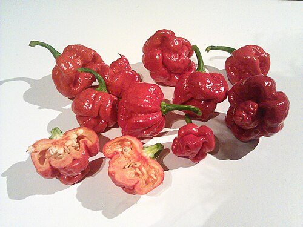
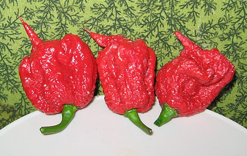
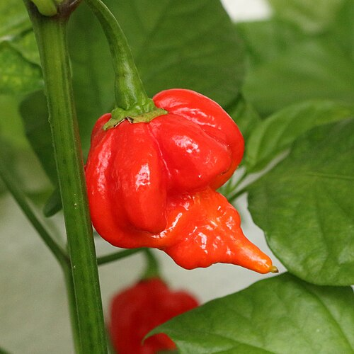
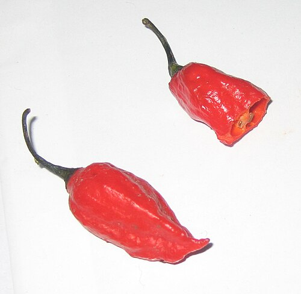
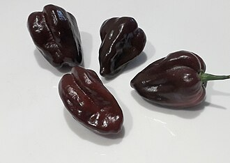
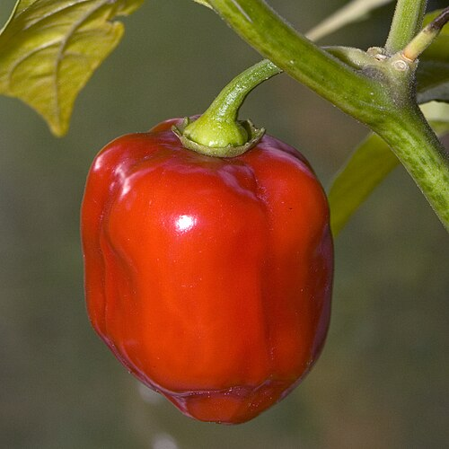

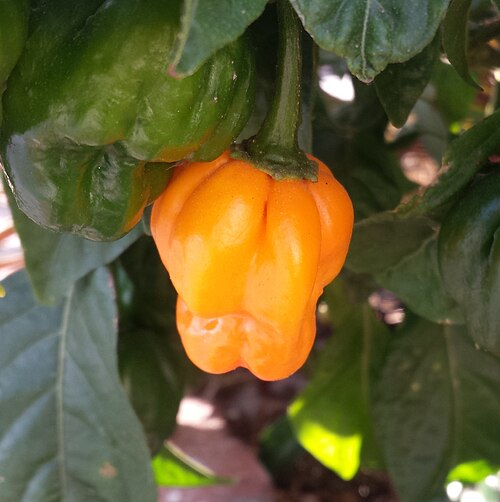
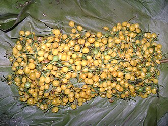
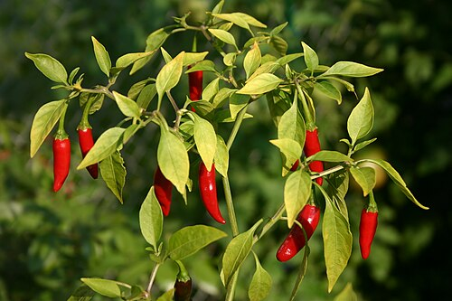
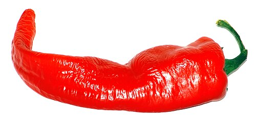
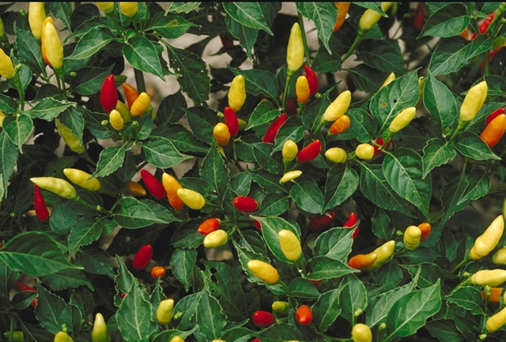
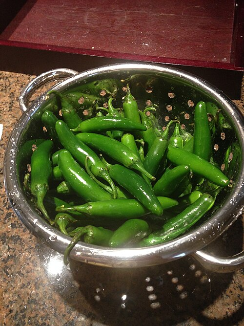
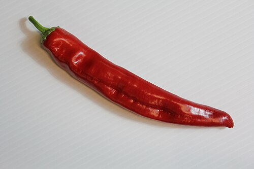

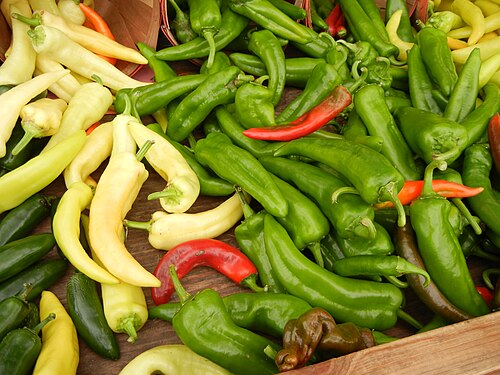
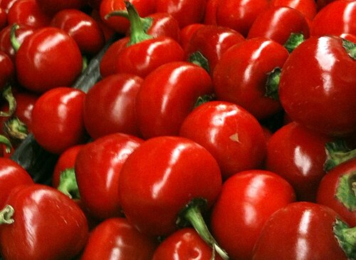
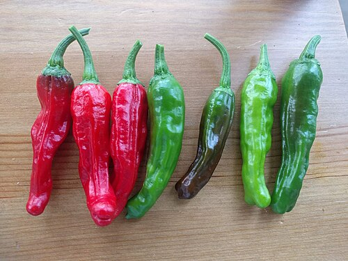
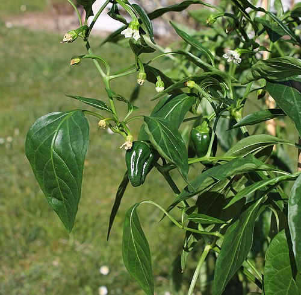
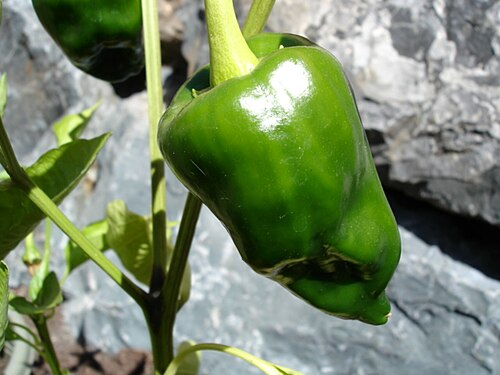
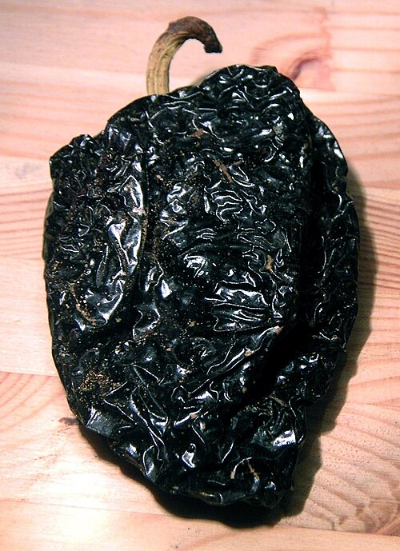
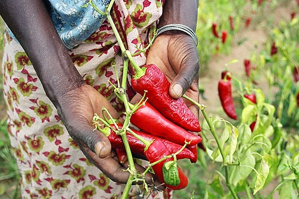
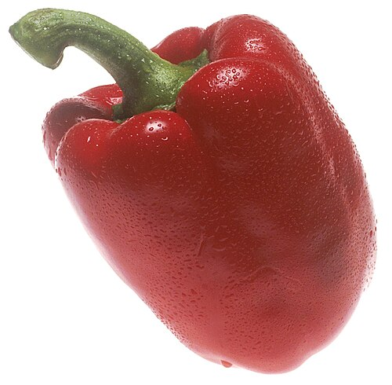
Some plant labels are abbreviated and a few sources describe similar names rather than confirmed matches. Where an exact variety photo was not verified, a clearly labeled related pepper is shown; follow the link for more information or an outside photo. Heat estimates are approximate; treat unknown peppers as hot.
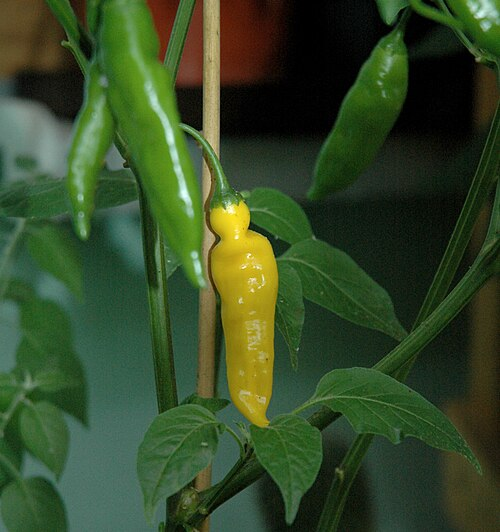
Photos are resized and may be cropped. Sources and licenses:
Poblanos (1,000–2,000 SHU) and Anaheims (1,000–5,000 SHU) are favorites for roasting or stuffing; shishitos and Padróns (50–2,500 SHU) are often cooked whole. Sweet bell peppers (0 SHU) offer a no-heat comparison.
Jalapeños (2,500–8,000 SHU), serranos (10,000–25,000 SHU) and hot wax peppers (1,000–15,000 SHU) work in salsas, fresh dishes and tested pickles. Cayenne and Tabasco (30,000–50,000 SHU) and Thai chiles (50,000–100,000 SHU) bring more heat to sauces and dried seasonings.
Habaneros (100,000–350,000 SHU), ghost peppers (about 1,000,000 SHU) and Trinidad Moruga Scorpions (about 2,000,000 SHU) offer intense heat. Start with a tiny amount in cooking; use gloves and avoid exposure to children, pets and sensitive skin.
Check days to maturity, expected plant size and ripe color. Some superhots need a longer warm season; an early variety or a healthy nursery transplant may be more reliable in the Lehigh Valley.
Peppers are warm-season nightshades, related to tomatoes and eggplant. Local frost dates are estimates, not guarantees.
Cold nights, heat or moisture stress can interrupt fruit set. Keep conditions steady where possible; avoid overfeeding and allow time for plants to recover.
Dark, sunken patches on fruit can be associated with uneven water uptake. Maintain consistent soil moisture; don’t assume extra calcium fertilizer is needed without a soil test.
Check leaf undersides for aphids and other insects. Remove badly affected material, improve airflow and identify the problem before treatment. Follow the label for any product used on edible crops.
Sudden intense sun can damage exposed fruit; retain a healthy leaf canopy. Avoid overwatering and poorly drained soil. Support plants rather than pulling on branches.
Check the variety for its harvest stage: many peppers are edible green and change color as they ripen. Clip fruit with a little stem rather than pulling; harvest regularly and before hard frost.
Refrigerate unwashed peppers and wash under running water before use. Discard moldy or spoiled fruit. Add small amounts to salsas, sauces, chili, stir-fries and marinades.
Thin-walled hot peppers can be dried using reliable extension instructions; freeze peppers using tested preparation and storage guidance. Label with the variety and date.
Pepper preservation →Plain peppers are low-acid and need a tested pressure-canning process. Pickles and salsa need tested recipes and their exact acid ratios. Refrigerator pickles must stay refrigerated.
Go to the canning guide →Wear food-safe gloves when cutting hot peppers, especially superhots. Do not touch your eyes, face or contact lenses. Wash hands, knives, boards and surfaces with soap and water after handling; keep peppers and residue away from children and pets.
Keep cooking spaces ventilated and avoid inhaling pepper dust or fumes. If exposure causes severe symptoms or trouble breathing, seek medical help; for exposure guidance in the U.S., contact Poison Control at 1-800-222-1222.
Never assume peppers or garlic stored in oil at room temperature are safe. Follow tested preservation and refrigeration directions.
Varieties, heat estimates, growing, harvest and common problems.
Read the guide →Planting, site preparation and care in a northern growing season.
Read the guide →How genetics, growing conditions and laboratory measurements affect heat ratings.
Read the guide →Tested canning, pickling and freezing guidance.
Read the guide →